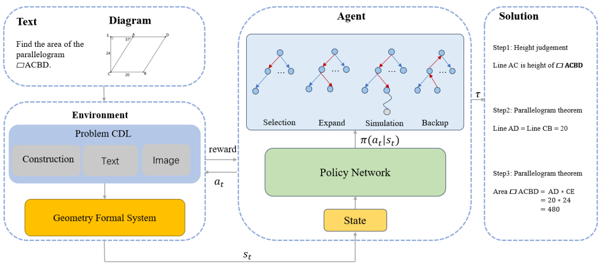
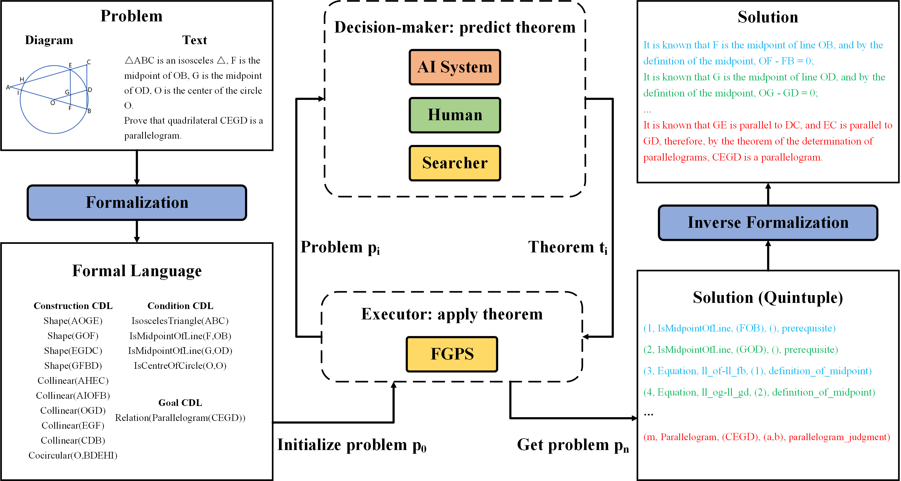

Publications
-

💥A Hybrid Framework for Automated Geometric Problem-Solving by Integrating Formal Symbolic Systems and Deep Learning
Zhengyu Hu, Xiaokai Zhang, Qin Cheng, Yang Li, Tuo Leng
To address the limitations of unidirectional approaches, we developed a neuro-symbolic system that integrates forward and backward reasoning.
Symmetry 2026 [Paper] [Project] [BibTex]
-

🔥FGeo-HyperGNet: Geometric Problem Solving Integrating FormalGeo Symbolic System and Hypergraph Neural Network
Xiaokai Zhang, Yang Li, Na Zhu, Cheng Qin, Zhenbing Zeng, Tuo Leng
We built a neural-symbolic system to automatically perform human-like geometric deductive reasoning. The symbolic part is a formal system built on FormalGeo and the neural part is a hypergraph neural network based on the attention mechanism.
IJCAI 2025 [Paper] [Project] [BibTex]
-

FGeo-Eval: Evaluation System for Plane Geometry Problem Solving
Qike Huang, Xiaokai Zhang, Na Zhu, Fangzhen Zhu, Tuo Leng
We propose FGeo-Eval, a comprehensive evaluation system for plane geometry problem solving. The evaluation system includes a problem completion rate (PCR) metric to assess partial progress, theorem weight computation to quantify knowledge importance, and a difficulty coefficient based on reasoning complexity.
Symmetry 2025 [Paper] [BibTex]
-

FGeo-Parser: Autoformalization and Solution of Plane Geometric Problems
Na Zhu, Xiaokai Zhang, Qike Huang, Fangzhen Zhu, Zhenbing Zeng, Tuo Leng
In this paper, we propose an enhanced geometric problem parsing method called FGeo-Parser, which converts problem diagrams and text into the formal language of the FormalGeo. Specifically, diagram parser leverages the BLIP to generate the construction CDL and image CDL, while text parser employs the T5 to produce the text CDL and goal CDL where these neural networks are both based on a symmetric encoder–decoder architecture.
Symmetry 2025 [Paper] [Project] [BibTex]
-

🔥Formal Representation and Solution of Plane Geometric Problems
Xiaokai Zhang, Na Zhu, Cheng Qin, Yang Li, Zhenbing Zeng, Tuo Leng
In this paper, we present formalgeo7k, a geometric problem dataset based on rigorous geometry formalization theory and consistent geometry formal system, serving as a benchmark for various tasks such as geometric diagram parsing and geometric problem solving.
NeurIPS 2024 Workshop on MATH-AI [Paper] [Project] [BibTex]
-

FGeo-DRL:Deductive Reasoning for Geometric Problems through Deep Reinforcement Learning
Jia Zou, Xiaokai Zhang, Yiming He, Na Zhu, and Tuo Leng
We built a neural-symbolic system, called FGeoDRL, to automatically perform human-like geometric deductive reasoning. The neural part is an AI agent based on reinforcement learning and the symbolic part is a reinforcement learning environment based on geometry formalization theory and FormalGeo.
Symmetry 2024 [Paper] [Project] [BibTex]
-

FGeo-TP: A Language Model-Enhanced Solver for Geometry Problems
Yiming He, Jia Zou, Xiaokai Zhang, Na Zhu, Tuo Leng
we introduced FGeo-TP (Theorem Predictor), which utilizes the language model to predict theorem sequences for solving geometry problems. Our results demonstrate a significant increase in the problem-solving success rate of the language model-enhanced FGeo-TP on the FormalGeo7k dataset, rising from 39.7% to 80.86%.
Symmetry 2024 [Paper] [Project] [BibTex]
-

FGeo-SSS: A Search-Based Symbolic Solver for Human-Like Automated Geometric Reasoning
Xiaokai Zhang, Na Zhu, Yiming He, Jia Zou, Cheng Qin, Yang Li, Tuo Leng
Based on the geometry formalization theory and the FormalGeo geometric formal system, we have developed the Formal Geometric Problem Solver (FGPS) in Python, which can serve as an interactive assistant for verifying problem-solving processes and as an automated problem solver that utilizes a variable search-based method and strategy.
Symmetry 2024 [Paper] [Project] [BibTex]
-

🔥FormalGeo: An Extensible Formalized Framework for Olympiad Geometric Problem Solving
Xiaokai Zhang, Na Zhu, Yiming He, Jia Zou, Qike Huang, Xiaoxiao Jin, Yanjun Guo, Chenyang Mao, Zhe Zhu, Dengfeng Yue, Fangzhen Zhu, Yang Li, Yifan Wang, Yiwen Huang, Runan Wang, Cheng Qin, Zhenbing Zeng, Shaorong Xie, Xiangfeng Luo, Tuo Leng
We have constructed a consistent formal plane geometry system. This will serve as a crucial bridge between IMO-level plane geometry challenges and readable AI automated reasoning. With this formal system in place, we have been able to seamlessly integrate modern AI models with our formal system.
arxiv:2310.18021 [Paper] [Project] [BibTex]